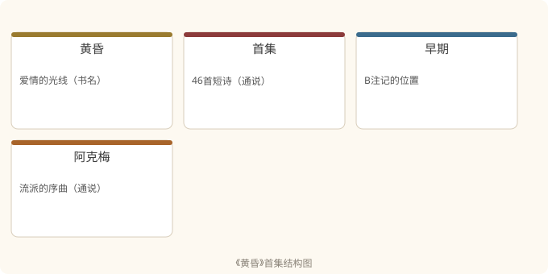

黄昏
一、基本信息
| 作者 | 阿赫玛托娃 |
|---|---|
| 成书/出版 | 1912年（作者页注记：Britannica——黄昏 (1912)——早期） Anna Akhmatova — Encyclopaedia Britannica（百科全书） |
| 国别/地区 | 俄国 |
| 时代 | 近代 · 20世纪10年代 |
| 体裁 | 诗集 |
| 语言 | 俄语 |

《黄昏》首集结构图（主题·结构图）
二、创作背景
作者页注记：黄昏 (1912)、念珠 (1914)——'早期（Britannica）'。
Britannica：阿赫玛托娃——俄国女诗人（作者页语境）。
题材（通说待核）：首部诗集——爱情短诗与'黄昏'的色调。
三、内容脉络
（通说待核）46首短诗的首集。
（通说待核）'我披上右手的手套'（不采为引文）。
四、主要人物表
| 人物 | 身份 | 说明 |
|---|---|---|
| 抒情'我' | 女诗人 | （通说待核） |
五、主题与艺术特点
- 爱情短诗的首集（B注记语境）。
- '黄昏'的色调（书名——通说待核）。
- 阿克梅派前奏（流派说待核）。
六、影响与评论
- Britannica：黄昏 (1912)——早期（作者页注记）。
Anna Akhmatova — Encyclopaedia Britannica（百科全书） - Britannica：《安魂曲》为代表作（作者页交叉）。
Anna Akhmatova — Encyclopaedia Britannica（百科全书）
七、阅读建议
难点
- 首集的格律。
- '阿克梅派'归属（待核）。
- 《黄昏》中译本（人民文学等——通说待核）。
- 俄文原版（公有领域）。
阿赫玛托娃首集；后接《念珠》。
八、待核实
- 篇数（46首说）核对（通说）。
- 1912年出版细节待核。
- '阿克梅派'归属核对。